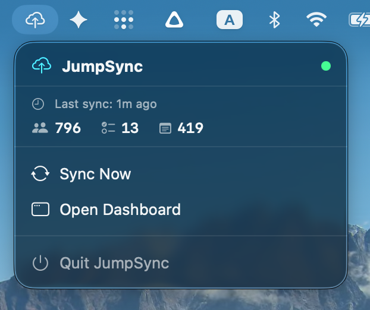

Total Isolation via One-Way Sync.
Artificial intelligence assistants require deep personal context to be truly helpful, but granting them full access to your personal file system is a major security risk. JumpSync solves this.
- Strict One-Way Push: Data flows out of your Mac, never in. Your core system remains untampered.
- Agent Isolation: OpenClaw consumes from the safe location, ensuring it cannot accidentally delete or alter primary files.
- Granular Control: Only push exactly the personal data you want the AI to learn from.
Curated Context for OpenClaw.
Silently securely parse and push your most critical personal APIs to power your AI's awareness.
Contacts
Push your macOS address book so OpenClaw recognizes who you interact with natively, retaining all related properties securely.
Reminders
Provide your agent a read-only mirror of your pending tasks. Let OpenClaw help schedule your day without write access risks.
Notes
Sync your highly-sensitive Apple Notes database into structured Markdown, safely decoupled so your AI can analyze your thoughts.
Designed for the Menubar.
JumpSync lives quietly as a background daemon accessed via your macOS menubar. Trigger a synchronization push instantly or review connection health to your safe location.
